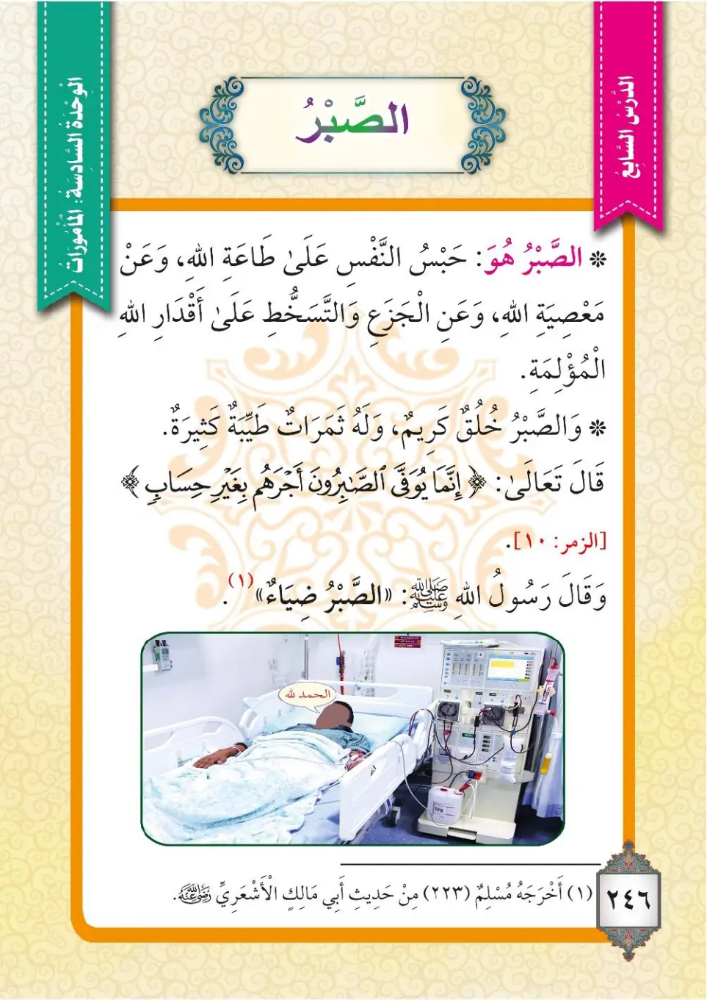

Stage 3·المرحلة الثالثة⭐ Unit 2
الصَّبْرُ Patience
From the Textbookp. 247

الصَّبْرُ: هُوَ حَبْسُ النَّفْسِ عَلَى طَاعَةِ اللهِ، وَعَنْ مَعْصِيَةِ اللهِ، وَعَنِ الْجَزَعِ وَالتَّسَخُّطِ عَلَى أَقْدَارِ اللهِ الْمُؤْلِمَةِ. وَالصَّبْرُ خُلُقٌ كَرِيمٌ، وَلَهُ ثَمَرَاتٌ طَيِّبَةٌ كَثِيرَةٌ. قَالَ تَعَالَى:
As-sabru: Huwa habsu an-nafsi 'ala ta'ati Allahi, wa 'an ma'siyati Allahi, wa 'ani al-jaza'i wat-tasakhkhuti 'ala aqdari Allahi al-mu'limah. Was-sabru khuluqun karimun, wa laHu thamaratun tayyibatun kathiratun. Qala ta'ala:
Patience is: restraining the soul upon the obedience of Allah, and away from the disobedience of Allah, and away from being restless and discontented over Allah's painful decrees. Patience is a noble quality, and it has many fine fruits. Allah the Exalted said:
சப்ர் (பொறுமை) என்பது: அல்லாஹ்வின் வழிபாட்டில் ஆன்மாவை நிலைநிறுத்துவதும், அவனுக்கு மாறு செய்வதிலிருந்தும், அல்லாஹ்வின் வேதனையான குறிப்புகள் மீது அமைதியிழந்து கோபப்படுவதிலிருந்தும் அதைத் தடுப்பதும் ஆகும். பொறுமை மாண்புமிக்க பண்பு; அதற்கு ஏராளமான நற்கனிகள் உண்டு. அல்லாஹ் கூறினான்:
﴿قُلْ يَا عِبَادِ الَّذِينَ آمَنُوا اتَّقُوا رَبَّكُمْ ۚ لِلَّذِينَ أَحْسَنُوا فِي هَٰذِهِ الدُّنْيَا حَسَنَةٌ ۗ وَأَرْضُ اللَّهِ وَاسِعَةٌ ۗ إِنَّمَا يُوَفَّى الصَّابِرُونَ أَجْرَهُم بِغَيْرِ حِسَابٍ﴾
Qul ya 'ibadi alladhina amanu-ttaqu rabbaKum; li-lladhina ahsanu fi hadhihi ad-dunya hasanah; wa ardu Allahi wasi'ah; innama yuwaffa as-sabiruna ajraHum bi-ghayri hisab.
Say, ‘[God says], believing servants, be mindful of your Lord! Those who do good in this world will have a good reward- God’s earth is wide––and those who persevere patiently will be given a full and unstinting reward.’
(நபியே!) "நம்பிக்கை கொண்ட என் அடியார்களே! உங்கள் இறைவனை அஞ்சுங்கள்" என்று கூறுங்கள். இந்த உலகில் நன்மை செய்தவர்களுக்கு நன்மை உண்டு; அல்லாஹ்வின் பூமி விசாலமானது; நிச்சயமாக பொறுமையாளர்களுக்கு அவர்களது கூலி கணக்கின்றிக் கணக்கிடப்படும்.
وَقَالَ رَسُولُ اللهِ ﷺ: «وَالصَّبْرُ ضِيَاءٌ». أَخْرَجَهُ مُسْلِمٌ (323) مِنْ حَدِيثِ أَبِي مَالِكٍ الْأَشْعَرِيِّ.
Wa qala rasulullahi ﷺ: «Was-sabru diya'». Akhrajahu Muslimun (323) min hadithi Abi Malik al-Ash'ariyyi.
The Messenger of Allah ﷺ said: "And patience is a light." Recorded by Muslim (323) from the hadith of Abu Malik al-Ash'ari.
அல்லாஹ்வின் தூதர் ﷺ கூறினார்கள்: "பொறுமை ஒளியாகும்." (முஸ்லிம் 323 - அபூ மாலிக் அல்-அஷ்அரீயின் அறிவிப்பு)